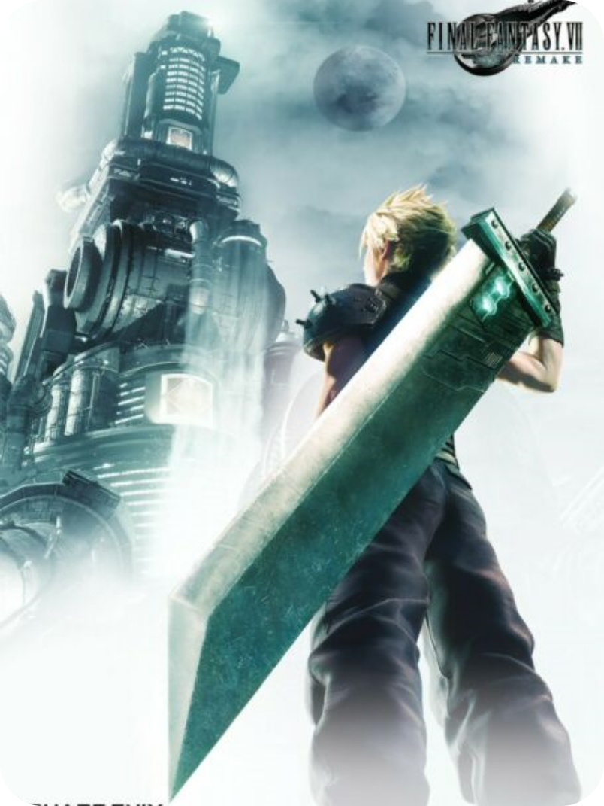

Final Fantasy VII Remake Intergrade: Here's What Comes in Each Edition


Final Fantasy Vii Remake Intergrade Is Coming To Ps5 On June 10. It Includes An Upgraded Version Of The
Original Game, Plus A New Episode Featuring Yuffie. The Playstation 5 Game Is Now Available For Preorder (see
It On Amazon), But The Rollout Is Bit Complicated. It Comes In A Few Different Editions, And Owners Of The Ps4
Version Get Some Stuff For Free. Let's Dig Into The Details.
get It At Amazon - $69.99
get
It At Best Buy - $69.99
get It At Gamestop - $69.99
get It At Newegg - $69.99
get It At Walmart
- $69.99
get It At Ps Store (digital) - $69.99
if You Want To Preorder The Full Ps5 Game, It's
Now Available At All The Usual Retailers. And Yes, It's Priced It Like A Standard Ps5 Game. This Comes
With The Base Game, Ps5 Upgrade, And The Yuffie Episode All In One Package.
final Fantasy Vii Remake
Intergrade Deluxe Edition
By Chris Reed. May 7, 2021
